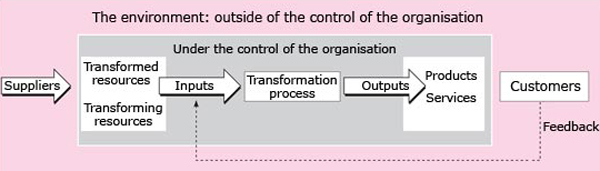

4 The boundary of the operations system¶
4.1 The boundary of the operations system¶
The simple transformation model in Figure 1 provides a powerful tool for looking at operations in many different contexts. It helps us to analyse and design operations in many types of organisation at many levels.
This model can be developed by identifying the boundaries of the operations system through which an organisation’s goods or services are provided to its customers or clients. Figure 3, shows this boundary and added three components that are located outside it:
suppliers
customers
the environment.

Figure 3 The operations boundary
Suppliers provide inputs to the operations system. They may supply raw materials (for example a quarrying company providing limestone to transform into glass), components (as in car assembly), finished products (for example a pharmaceutical company providing drugs to a hospital, or an office supplies company providing it with stationery) or services (as in the case of a law firm providing legal advice).
The customers (or clients) are the users of the outputs of the transformation process. The boundary drawn in Figure 3 around the transforming process can be thought of as the boundary of the organisation, so that the whole organisation is viewed as an operations system, with its customers external to it. This may be an appropriate way of viewing a small organisation, whose outputs go directly to its external customers.
However, most macro operations are made up of a number of micro operations, or sub-systems. Only the outputs of the final micro operation go directly to a customer or client who is not part of the organisation that is carrying out the macro operation. The final user or client of the good or service is the organisation’s external customer, and the users or clients of the outputs of the other micro operations internal customers. Most of the operations in a large organisation serve internal, rather than external customers. For example, if you are the manager of a human resources department, a printing unit or a building maintenance section within a large organisation, your customers are internal: they are other sub-systems within the larger organisation that are external to your operations system but internal to the organisation as a whole.
All operating systems are influenced by the organisation’s environment. This environment includes both other functional areas within the organisation, each with its own policies, resources, forecasts, goals, assumptions and constraints, and the wider world outside the organisation – the legal, political, social and economic conditions within which it is operating. Changes in either the internal or the external environment may affect the operations function.
Traditionally, organisations have kept the operations function separate from both its customers and its suppliers, in order to protect it from environmental disturbances (Thompson, 1967). This can lead to a ‘closed system’ mentality, in which the operations function loses contact with external customers and suppliers, and focuses only on the transformation process that it controls. A closed system tends to limit flexibility and result in a loss of competitiveness. An ‘open system’ mentality, in which communication with customers and suppliers is encouraged, seeks to reduce the barriers between the operations function and its environment, in order to enhance the organisation’s competitiveness.
An added complication is that, as organisations become more complex, it becomes increasingly difficult to draw neat boundaries around the operations function. Operations management must therefore focus its attention on key interfaces within the organisation, as well as on interfaces between the organisation and its external customers and suppliers. Most operations systems are part of a supply chain that involves materials, information and customers, and the distribution of finished goods or services to customers or clients. It is therefore the responsibility of the operations function to co-ordinate the flow of information that links these activities through the supply chain. Thus, while some operations managers are concerned only with the transformation process within a single organisational unit, such as a factory or service outlet, many are involved in managing operations across several organisational units or even across separate organisations.
4.2 A process perspective on organisations¶
The overall transformation process can be broken down into a series of micro-processes. Attention to processes within organisations can provide a powerful tool for understanding organisational performance. In the extract below, David Garvin discusses how attention to work processes can yield new insights for managers about the ways in which performance may be improved.
Activity 6¶
Question¶
Read the extract below and make your own notes about the key points Garvin makes and their application to your own organisation.
The work process approach, which has roots in industrial engineering and work measurement, focuses on accomplishing tasks. It starts with a simple but powerful idea: organizations accomplish their work through linked chains of activities cutting across departments and functional groups. These chains are called processes and can be conveniently grouped into two categories: (1) processes that create, produce, and deliver products and services that customers want, and (2) processes that do not produce outputs that customers want, but that are still necessary for running the business. I call the first group ‘operational processes’ and the second group ‘administrative processes’. New product development, manufacturing, and logistics and distribution are examples of operational processes, while strategic planning, budgeting, and performance measurement are examples of administrative processes. Operational and administrative processes share several characteristics. Both involve sequences of linked, interdependent activities that together transform inputs into outputs. Both have beginnings and ends, with boundaries that can be denned with reasonable precision and minimal overlap. And both have customers, who may be internal or external to the organization. The primary differences between the two lie in the nature of their outputs. Typically, operational processes produce goods and services that external customers consume, while administrative processes generate information and plans that internal groups use. For this reason, the two are frequently considered independent, unrelated activities, even though they must usually be aligned and mutually supportive if the organization is to function effectively. Skilled supply chain management, for example, demands a seamless link between a company’s forecasting and logistics processes, just as successful new product development rests on well-designed strategy formation and planning processes. The work processes approach is probably most familiar to managers. It draws heavily on the principles of the quality movement and re-engineering. Both focus on the need to redesign processes to improve quality, cut costs, reduce cycle times, or otherwise enhance operating performance. Despite these shared goals, the two movements are strikingly similar on some points, but diverge on others. The similarities begin with the belief that most existing work processes have grown unchecked, with little rationale or planning, and are therefore terribly inefficient. Hammer, for example, has observed: ‘Why did we design inefficient processes? In a way, we didn’t. Many of our procedures were not designed at all; they just happened …. The hodgepodge of special cases and quick fixes was passed from one generation of workers to the next.’ The result, according to one empirical study of white-collar processes, is that value-added time (the time in which a product or service has value added to it, as opposed to waiting in a queue or being reworked to fix problems caused earlier) is typically less than 5 per cent of total processing time. To eliminate inefficiencies, both movements suggest that work processes be redesigned. In fact, both implicitly equate process improvement with process management. They also suggest the use of similar tools, such as process mapping and data modelling, as well as common rules of thumb for identifying improvement opportunities. First, flow charts are developed to show all the steps in a process; the process is then made more efficient by eliminating multiple approvals and checkpoints, finding opportunities to reduce waiting time, smoothing the handoffs between departments, and grouping related tasks and responsibilities. At some point, ‘process owners’ with primary responsibility for leading the improvement effort are also deemed necessary. Their role is to ensure integration and overcome traditional functional loyalties; for this reason, relatively senior managers are usually assigned the task. The differences between the two movements lie in their views about the underlying nature and sources of process change. The quality movement, for the most part, argues for incremental improvement. Existing work processes are assumed to have many desirable properties; the goal is to eliminate unnecessary steps and errors while preserving the basic structure of the process. Improvements are continuous and relatively small-scale. Re-engineering, by contrast, calls for radical change. Existing work processes are regarded as hopelessly outdated; they rely on work practices and a division of labor that take no account of modern information technology. For example, the case management approach, in which ‘individuals or small teams … perform a series of tasks, such as the fulfillment of a customer order from beginning to end, often with the help of information systems that reach throughout the organization,’ was not economically viable until the arrival of powerful, inexpensive computers and innovative software. For this reason, re-engineering focuses less on understanding the details of current work processes and more on ‘inventing a future’ based on fundamentally new processes. Perhaps the most dramatic difference between the two approaches lies in the importance they attach to control and measurement. Quality experts, drawing on their experience with statistical process control in manufacturing, argue that well-managed work processes must be fully documented, with clearly defined control points. Managers can improve a process, they believe, only if they first measure it with accuracy and assure its stability. After improvement, continuous monitoring is required to maintain the gains and ensure that the process performs as planned. Re-engineering experts, on the other hand, are virtually silent about measurement and control. They draw on a different tradition, information technology, that emphasizes redesign rather than control.Insights for Managers The work processes perspective has led to a number of important insights for managers. It provides an especially useful framework for addressing a common organizational problem: fragmentation, or the lack of cross-functional integration. Many aspects of modern organizations make integration difficult, including complexity, highly differentiated sub-units and roles, poor informal relationships, size, and physical distance. Integration is often improved by the mere acknowledgment of work processes as viable units of analysis and targets of managerial action. Charting horizontal work flows, for example, or following an order through the fulfillment system, are convenient ways to remind employees that the activities of disparate departments and geographical units are interdependent, even if organization charts, with their vertical lines of authority, suggest otherwise. In addition, the work processes perspective provides new targets for improvement. Rather than focusing on structures and roles, managers address the underlying processes. An obvious advantage is that they closely examine the real work of the organization. The results, however, have been mixed, and experts estimate that a high proportion of these programmes have failed to deliver the expected gains. My analysis suggests several reasons for failure. Most improvement programmes have focused exclusively on process redesign; the ongoing operation and management of the reconfigured processes have usually been neglected. Yet even the best processes will not perform effectively without suitable oversight, co-ordination, and control, as well as occasional intervention. In addition, operational processes have usually been targeted for improvement, while their supporting administrative processes have been overlooked. Incompatibilities and inconsistencies have arisen when the information and plans needed for effective operation were not forthcoming. A few companies have used the work processes approach to redefine their strategy and organization. The most progressive have blended a horizontal process orientation with conventional vertical structures. Source: Garvin, D. A. (1998), ‘The processes of organization and management’, Sloan Management Review, Cambridge; Summer, pp.35–37
Discussion¶
I hope you found that you could make sense of the article in terms of your own organisation. When I read the article I pulled out a number of points I felt were important. You may have identified others.
The distinction between operational and administrative processes.
Two different approaches to process improvement: the quality movement approach (incremental – focuses on measurement and control) and the re-engineering approach (radical – focuses on redesign).
The process perspective can encourage more effective cross-functional integration.
Attempts at process improvement are not always successful, in part because of insufficient attention to supporting management and control systems and to the supporting administrative processes.
Activity 7¶
Question¶
Take some time to apply the transformation model to your own organisation. (If you work in a large or complex organisation, you may want to focus on some part of it.)
List the principal inputs (transformed and transforming resources), transformation processes and outputs. Put these together into a transformation model diagram. You may want to show the transformation process as a series of linked micro-processes, rather than a single process, depending on how complex the process is. Where are marketing, human resource management and financial control important in this process?
Draw a diagram like the one in Figure 3 to show the boundary of your operations system, identifying on it:
the main inputs, the type(s) of transformation process and the main outputs
the main sources of feedback
the suppliers and customers that are external to your system
the main environmental influences.